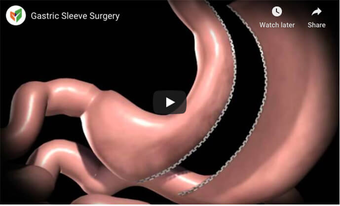

Offering a compassionate program that provides comprehensive care and support before, during, and after bariatric surgery to morbidly obese patients, Smart DIMENSIONS™ performs gastric sleeve surgery for Los Angeles and Orange County residents requiring bariatric surgery.
Explore Surgical Treatment of Obesity: Sleeve Gastrectomy
Obesity is a serious epidemic that threatens the mortality of millions of Americans. Being overweight puts individuals at risk for obesity-related health conditions such as heart disease, hypertension and sleep apnea. The best way to reduce the risk of these conditions and enjoy a better quality of life is to lose excess weight safely and effectively. When diet and exercise fail to result in significant weight loss, some individuals must consider surgical intervention. Sleeve gastrectomy, otherwise known as gastric sleeve surgery, is one of the bariatric surgery options available at Smart DIMENSIONS™. Read on to learn more about gastric sleeve surgery, and contact our Orange County practice to schedule a consultation with one of our experienced bariatric surgeons.
About Gastric Sleeve Surgery
Gastric sleeve surgery is a restrictive weight loss surgery that reduces the size of the stomach. This limits the amount of food that the stomach can hold and lessens the sensation of hunger. During surgery, approximately 70 percent of the stomach is removed, leaving a small, banana-shaped stomach pouch and the intestines are completely intact.
The Benefits of Gastric Sleeve Surgery
Gastric sleeve surgery is a safe and highly effective option for rapid weight loss. Patients who follow a strict diet and maintain a steady exercise routine are likely to lose a significant amount of their excess weight. Since the gastric sleeve procedure does not reroute the intestinal tract, it reduces the risk of malabsorption that can occur as a result of other bariatric procedures. The procedure can also be performed laparoscopically to help reduce the risk of complications and scarring and speed up the recovery process.
Your Surgery will be performed by one of our bariatric surgeons in Fountain Valley, CA
Free Insurance Check
Check HereRecovering from Gastric Sleeve Surgery
You may be required to stay overnight for up to three days following your Gastric sleeve procedure. This is so that your vitals can be monitored and to ensure no post-surgical complications occur. Some swelling and soreness around the abdominal area are to be expected. Medication may be provided to help manage any discomfort.
You will be provided with a detailed list of post-surgical instructions prior to leaving the hospital and returning home. These instructions will help you throughout the recovery period, but if you experience any concerning issues, it is important that you visit your doctor right away.